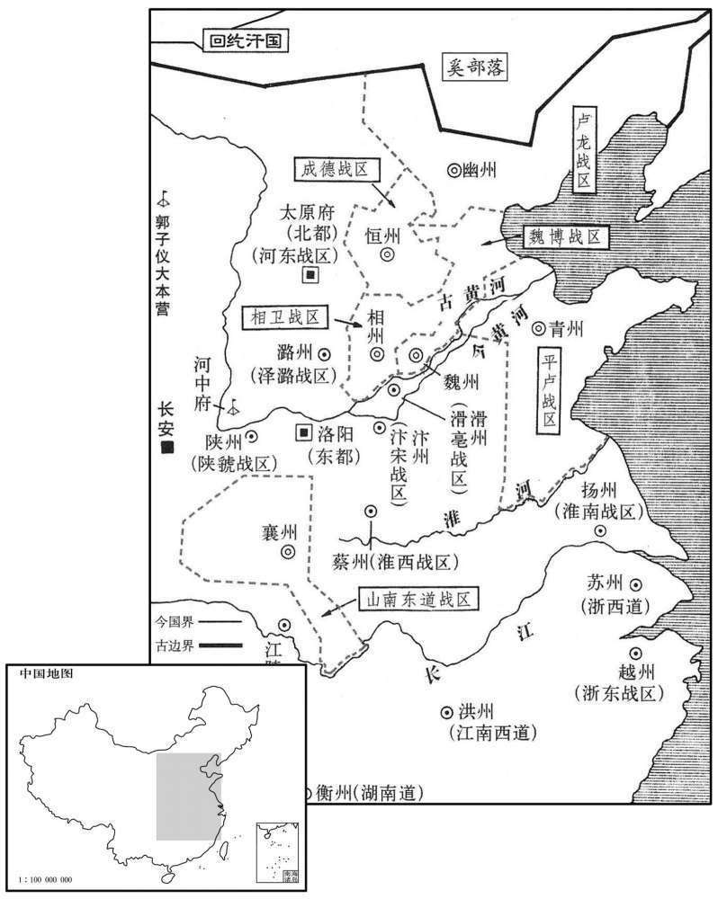
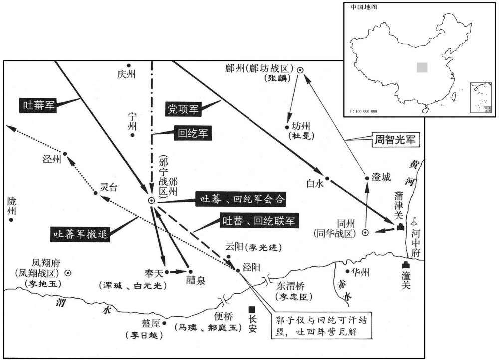
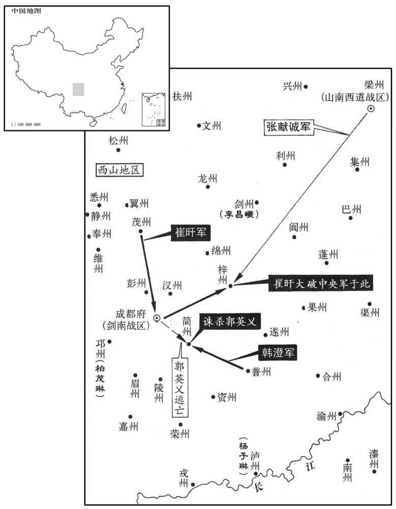

公元765年资治通鉴：本年记事、原文与白话对照
按原书编年位置阅读；追叙和史论不等于本年发生的事件。白话采用所据译本，缺译不以生成译文补齐。
卷223 · 本年记事
公元765年 · 唐代宗睿文孝武皇帝永泰元年
永泰元年〔（乙巳，七六五）〕
上传原文的注释括号有异常，字符原样保留；无法可靠划分的段落默认全文显示。
本年记事分属相邻卷，按原书顺序分别保留：第223卷 · 第224卷。
本年事件索引（现代整理）
- 代宗改元并大赦天下
- 代宗加授李抱玉凤翔、陇右节度使
- 党项攻掠富平并焚烧定陵殿
- 仪王李璲去世
- 独孤及上疏批评军费过重、民生困苦
- 代宗任李抱玉为同平章事
- 吐蕃遣使请和，代宗派元载等与之盟誓
- 春季不雨，米价每斗千钱
- 代宗命王端担任诸道税钱使
- 剑南节度使严武去世
- 代宗任郭英乂为剑南节度使
- 京兆尹第五琦奏请按什一之法征收田税
- 侯希逸遭军士驱逐，李怀玉接掌平卢淄青军
- 代宗将升平公主嫁给郭子仪之子郭暧
- 代宗追寻失踪多年的太子生母沈氏，识破僧尼冒充
- 代宗命在资圣、西明寺讲《仁王经》并举行仪仗
- 仆固怀恩引回纥、吐蕃等数十万军分道入寇
- 郭子仪建议各道出兵，李忠臣奉诏立即出征
- 仆固怀恩途中病死，代宗仍为其叛乱隐讳
- 吐蕃围攻邠州、奉天，浑瑊率骑兵奋战
- 鱼朝恩建议代宗逃往河中，刘给事当廷斥责
- 连日大雨阻止吐蕃进兵，周智光击敌后屠戮鄜州
- 代宗恢复在资圣寺讲经
- 吐蕃与回纥再度合兵逼近奉天
- 郭子仪单骑劝说回纥倒戈，双方结盟
- 回纥与唐军联手大败吐蕃并救回被掳百姓
- 仆固怀恩部将张休藏等归降
- 代宗下诏停止亲征并解除京城戒严
- 鱼朝恩统领的神策军正式壮大并编为左右厢
- 郭子仪招降仆固怀恩旧将及党项首领
- 周智光入朝献捷后获准返回镇所
- 回纥将领入朝，代宗厚赠缯帛

本年形势与背景参考图

本年形势与背景参考图

本年形势与背景参考图
春，正月，癸卯朔，改元；赦天下。
本段缺少可靠对应白话，原文完整保留；未使用生成译文。
戊申，加陈郑、泽潞节度使李抱玉凤翔、陇右节度使，〔李抱玉时以陈郑、泽潞行营兵屯京西，故加凤翔、陇右节度使。〕以其从弟殿中少监抱真为泽潞节度副使。〔从，才用翻。少，始照翻。〕抱真以山东有变，上党为兵冲，而荒乱之余，土瘠民困，无以赡军，乃籍民，每三丁选一壮者，免其租、傜，给弓矢，使农隙习射，岁暮都试，〔史照曰：谓总阅试习武备也。霍光传：都肄郎。孟康曰：都，试也。汉制，郡国以八月都试，阅武备。〕行其赏罚。比三年，得精兵二万，〔比，必利翻，及也。〕既不费廪给，府库充实，遂雄视山东。由是天下称泽潞步兵为诸道最。〔为李抱真以泽潞兵横制诸叛张本。〕
本段缺少可靠对应白话，原文完整保留；未使用生成译文。
二月，戊寅，党项寇富平，焚定陵殿。〔党，底朗翻。定陵，中宗陵也，在雍州富平县西北。凡陵有寝有殿，后曰寝，前曰殿。〕
本段缺少可靠对应白话，原文完整保留；未使用生成译文。
庚辰，仪王璲薨。〔璲，玄宗子也，音逐。〕
本段缺少可靠对应白话，原文完整保留；未使用生成译文。
三月，壬辰朔，命左仆射裴冕、右仆射郭英乂等文武之臣十三人于集贤殿待制。〔永徽中，命弘文馆学士二人日待制于武德殿西门。文明元年，诏京官五品以上清官日一人待制于章善、明福门。先天末，又命朝集仗六品以上二人随仗待制。时勋臣罢节制，无职事，令待制于集贤殿门。宋白曰：是年，诏左仆射裴冕、右仆射郭英乂、太子少傅裴遵庆。检校太子少保兼御史大夫元志直、太子詹事兼御史大夫臧希让、左散骑常侍畅璀、检校刑部尚书王昂、高升、检校工部尚书知省事崔涣、吏部侍郎李季师、王延昌、礼部侍郎贾至、泾王傅吴令瑶集贤待制。以勋臣罢节制，无职事，乃于禁门书院待制，间以文儒，宠之也。〕左拾遗洛阳独孤及上疏曰：「陛下召冕等待制以备询问，此五帝盛德也。〔上，时掌翻。疏，所句翻。〕顷者陛下虽容其直而不录其言，有容下之名，无听谏之实，遂使谏者稍稍钳口饱食，相招为禄仕，此忠鲠之人所以窃叹，而臣亦耻之。今师兴不息十年矣，〔钳，其廉翻。玄宗天宝十四载，安禄山反，至是十年。〕人之生产，空于杼轴。拥兵者第馆亘街陌，奴婢厌酒肉，而贫人羸饿就役，剥肤及髓。长安城中白昼椎剽，〔羸，伦为翻。椎，直追翻。剽，匹妙翻。〕吏不敢诘，官乱职废，将角卒暴，百揆隳剌，如沸粥纷麻，〔唐、虞有百揆之官。孔安国曰：揆，度也。度百事，总百官。此所谓百揆，盖言百官之事也。诘，去吉翻。将，即亮翻。剌，来达翻。〕民不敢诉于有司，有司不敢闻于陛下，茹毒饮痛，穷而无告。陛下不以此时思所以救之之术，臣实惧焉。今天下惟朔方、陇西有吐蕃、仆固之虞，邠、泾、凤翔之兵足以当之矣。自此而往，东洎海，南至番禺，〔吐，从暾入声。邠，卑巾翻。洎，其计翻。番禺，音潘愚。〕西尽、巴蜀，无鼠窃之盗而兵不为解。〔为，于伪翻。〕倾天下之货，竭天下之谷，以给不用之军，臣不知其故。假令居安思危，自可阨要害之地，俾置屯御，〔令，力丁翻。阨，与扼同。〕悉休其余，以粮储屝屦之资〔屝，扶沸翻，草屩也，黄帝臣于则所造。〕充疲人贡赋，岁可减国租之半。陛下岂可持疑于改作，使率土之患日甚一日乎！」上不能用。
本段缺少可靠对应白话，原文完整保留；未使用生成译文。
丙午，以李抱玉同平章事，镇凤翔如故。
本段缺少可靠对应白话，原文完整保留；未使用生成译文。
庚戌，吐蕃遣使请和，诏元载、杜鸿渐与盟于兴唐寺。〔程大昌曰：安国寺在朱雀街东第四街之长乐坊。兴唐寺别在向南一坊。开元八年造。会要：兴唐寺在大宁坊，神龙元年，太平公主为天后立，为罔极寺，开元二十年改为兴康寺。使，疏吏翻。载，祖亥翻，又音如字。〕上问郭子仪：「吐蕃请盟，何如﹖」对曰：「吐蕃利我不虞，若不虞而来，国不可守矣。」〔不虞，犹不备也。〕乃相继遣河中兵戍奉天，又遣兵巡泾原以觇之。〔觇，丑廉翻，又丑艳翻。〕
本段缺少可靠对应白话，原文完整保留；未使用生成译文。
是春不雨，米斗千钱。
本段缺少可靠对应白话，原文完整保留；未使用生成译文。
夏，四月，丁丑，命御史大夫王端充诸道税钱使。河东道租庸、盐铁使裴谞入奏事，〔谞，私吕翻。〕上问：「榷酤之利，岁入几何﹖」谞久之不对。上复问之，〔复，扶又翻。〕对曰：「臣自河东来，所过见菽粟未种，农夫愁怨，臣以为陛下见臣，必先问人之疾苦，乃责臣以营利，臣是以未敢对也。」上谢之，拜左司郎中。谞，宽之子也。〔裴宽事玄宗。〕
本段缺少可靠对应白话，原文完整保留；未使用生成译文。
辛卯，剑南节度使严武薨。武三镇剑南，〔按至德二载收长安，以武为剑南东川节度使。上皇诰以剑南两川合为一道，拜武成都尹，充剑南节度使。既，召入朝。去年，复以武镇剑南。凡再镇剑南，前后三受命耳。广德二年，考异谓东、西川非上皇诰所合者，盖至德二载分剑南为东、西川，是年上皇还京师，则合东、西串为一道，必非上皇诰。通鉴干元元年书严武贬巴州，宝应元年书以兵部侍郎严武为西川节度使，广德二年书合东、西川，以黄门侍郎严武为节度使。据通鉴所书，武盖再镇剑南。今曰三镇剑南，则是先尝除东川，乃可言三。通鉴既不取新、旧二书，宜不书除东川一节。然言武三镇剑南，更须博考。按下卷书武用崔旱事，亦只再镇剑南耳。唐书盖因杜甫诗，有「主恩前后三持节」之语，致有此误。〕厚赋敛以穷奢侈；梓州刺史章彝小不副意，召而杖杀之；然吐蕃畏之，不敢犯其境。母数戒其骄暴，〔敛，力赡翻。吐，从暾入声。数，所角翻。〕武不从；及死，母曰：「吾今始免为官婢矣！」〔言武骄暴，以悖逆致罪，祸必及母，今其死，乃知免。〕
本段缺少可靠对应白话，原文完整保留；未使用生成译文。
五月，癸丑，以右仆射郭英乂为剑南节度使。〔为郭英乂为崔旱所杀张本。射，寅谢翻。使，疏吏翻。〕
本段缺少可靠对应白话，原文完整保留；未使用生成译文。
畿内麦稔，京兆尹第五琦请税百姓田，十亩收其一，曰：「此古什一之法也。」〔史言第五琦傅会古法以欺君。琦，音奇。〕上从之。
本段缺少可靠对应白话，原文完整保留；未使用生成译文。
平卢节度使侯希逸镇淄青，〔侯希逸镇淄青始上卷上元二年。使，疏吏翻；下同。〕好游畋，营塔寺，〔好，呼到翻。〕军州苦之。兵马使〔使，疏吏翻。〕李怀玉得众心，希逸忌之，因事解其军职。希逸与巫宿于城外，军士闭门不纳，奉怀玉为帅。希逸奔滑州，上表待罪，〔帅，所类翻。〕诏赦之，召还京师。〔还，从宣翻，又音如字。〕秋，七月，壬辰，以郑玉邈为平卢、淄青节度大使，〔邈，皇子也。〕以怀玉知留后，赐名正己。时承〔【章：十二行本「承」作「成」；乙十一行本同；张校同。】〕德节度使李宝臣，魏博节度使田承嗣，相卫节度使薛嵩，卢龙节度使李怀仙，收安、史余党，各拥劲卒数万，治兵完城，〔相，息亮翻。嗣，祥吏翻。治，直之翻。〕自署文武将吏，不供贡赋，与山南东道节度使梁崇义及正己皆为婚姻，互相表里。朝廷专事姑息，不能复制，虽名藩臣，羁縻而已。〔史因李正己逐侯希逸，究言藩镇之横。复，扶又翻。将，即亮翻。朝，直遥翻。〕
本段缺少可靠对应白话，原文完整保留；未使用生成译文。
甲午，以上女升平公主嫁郭子仪之子暧。〔暧，乌代翻。〕
本段缺少可靠对应白话，原文完整保留；未使用生成译文。
太子母沈氏，吴兴人也；〔吴兴，湖州。〕安禄山之陷长安也，〔见二百十八卷肃宗至德元载。〕掠送洛阳宫。上克洛阳，〔见二百二十一卷干元二年。〕见之，未及迎归长安；会史思明再陷洛阳，〔见一百二十一卷干元二年。〕遂失所在。上即位，遣使散求之，不获。屈亥，寿州崇善寺尼广澄诈称太子母，按验，乃故少阳院乳母也，〔大明宫有少阳院，太子居之。尼，女夷翻。少，诗照翻。〕鞭杀之。
本段缺少可靠对应白话，原文完整保留；未使用生成译文。
九月，庚寅朔，置百高座于资圣、西明两寺，〔据百高座，百尺高座也。唐会要：资圣寺在崇仁坊，本长孙无忌宅，龙朔三年，为文德皇后资福，立为尼寺，咸亨四年，复为僧寺。西明寺在延康坊，本越国公杨素宅，贞观中赐濮王泰，泰死，乃立为寺。〕讲仁王经，〔所谓护国仁王经。〕内出经二宝舆，以人为菩萨、鬼神之状，导以音乐卤簿，百官迎于光顺门外，从至寺。〔菩，音蒲。〕萨，桑葛翻。
本段缺少可靠对应白话，原文完整保留；未使用生成译文。
仆固怀恩诱回纥、吐蕃、吐谷浑、党项、奴剌〔诱，羊久翻。吐，从暾入声。纥，下没翻。谷，音浴。党，音底朗翻。刺，卢达翻。〕数十万众俱入寇，令吐蕃大将尚结悉赞摩、马重英等自北道趣奉天，党项帅任敷、郑庭、郝德等自东道趣同州，〔宋白曰：任敷，朔方旧将。趣，七喻翻；下同。〕吐谷浑、奴刺之众自西道趣盩厔，回纥继吐蕃之后，怀恩又以朔方兵继之。
本段缺少可靠对应白话，原文完整保留；未使用生成译文。
郭子仪使行军司马赵复之奏曰：「虏皆骑兵，其来如飞，不可易也。〔易，以豉翻，轻也。〕请使诸道节度使凤翔李抱玉、滑濮李光庭、邠宁白孝德、〔「李光庭」，恐当作「李光进」。〕镇西马璘、河南郝庭玉、淮西李忠臣各出兵以扼其冲其要。」〔此时李光庭、郝庭玉、李忠臣各在本道，余皆分屯京西。〕上从之。诸道多不时出兵；李忠臣方与诸将击球，得诏，亟命治行。〔治，直之翻。〕诸将及监军皆曰：「师行必择日。」忠臣怒曰：「父母有急，岂可择日而后救邪！」即日勒兵就道。
本段缺少可靠对应白话，原文完整保留；未使用生成译文。
怀恩中途遇暴疾而归；丁酉，死于鸣沙。〔考异曰：旧怀恩传曰：「怀恩领回纥及朔方之众继进，行至鸣沙县，遇疾，舁归；九月九日，死于灵武。」按长历，九月庚寅朔。丁酉，八日也。唐历、邠志皆云「九月八日，怀恩死于灵州。」今从实录。〕大将张韶代领其众，别将徐璜玉杀之，范志诚又杀璜玉而领其众。怀恩拒命三年，再引胡寇，为国大患，〔去年及今年之寇。〕上犹为之隐，〔为，于伪翻。〕前后敕制未尝言其反；及闻其死，悯然曰：「怀恩不反，为左右所误耳！」
本段缺少可靠对应白话，原文完整保留；未使用生成译文。
吐蕃至邠州，白孝德婴城自守。甲辰，上命宰相及诸司长官〔六曹有尚书，寺有卿，监有监，皆为诸司长官。〕于西明寺行香设素馔，奏乐。〔徼福于佛也。〕是日，吐蕃十万众至奉天，京城震恐。朔方兵马使浑瑊、〔浑，户昆翻，又户本翻。瑊，古咸翻。〕诗击使白元光先戍奉天，虏始列营，瑊帅骁骑二百冲之，身先士卒，虏众披靡。〔先，昔见翻。披，普彼翻。〕瑊挟虏将一人跃马而还，从骑无中锋镝者。〔从，才用翻。中，竹仲翻。〕城上士卒望之，勇气始振。乙巳，吐蕃进攻之，虏死伤甚众，数日，敛众还营；瑊夜引兵袭之，杀千余人，前后与虏战二百余合，斩首五千级。丙午，罢百高座讲；召郭子仪于河中，使屯泾阳。己酉，命李忠臣屯东渭桥，李光进屯云阳，马璘、郝庭玉屯便桥，李抱玉屯凤翔，内侍骆奉仙、将军李日越屯盩厔，同华节度使周智光屯同州，鄜坊节度使杜冕屯坊州，上自将六军屯苑中。
本段缺少可靠对应白话，原文完整保留；未使用生成译文。
庚戌，下制亲征。辛亥，鱼朝恩请索城中，括士民私马，令城中男子皆衣皁，〔索，山客翻。衣，于既翻。〕团结为兵，城门皆塞二开一。〔塞，悉则翻。〕士民大骇，踰垣凿窦而逃者甚众，吏不能禁。朝恩欲奉上幸河中以避吐蕃，恐群臣议论不一，一旦，百官入朝，立班久之，合门不开，〔谓东西上合门也。〕朝恩忽从禁军十余人操白刃而出，宣言：「吐蕃数犯郊畿，〔操，七刀翻。数，所角翻。〕车驾欲幸河中，何如﹖公卿皆错愕不知所对。有刘给事者，独出班抗声曰：「敕使反邪！〔唐人谓宦官为敕使。使，疏吏翻。〕今屯军如云，不湏力扞寇，而遽欲胁天子弃宗庙社稷而去，非反而何！」朝恩惊沮而退，事遂寝。〔刘给事立朝守正不可夺如此；且两省官也，而史失其名，唐置史馆何为哉！考异曰：新鱼朝恩传云：「仆固玚攻绛州，使姚良据温，诱回纥陷河阳。朝恩遣李忠诚讨玚，以霍文玚监之；王景岑讨良，王希迁监之。败玚于万泉，生擒良。高晖等引吐蕃入寇，遣刘德信讨斩之。故朝恩因麾下数克获，窃以自高。是时郭子仪有定天下之功，居人臣第一，心媢之，乘相州败，丑为诋谮。肃宗不内其语，然犹罢子仪兵，留京师。代宗立，与程元振一口加毁，帝未及寤，子仪忧甚；俄而吐蕃陷京师，卒用其力，王室再安。朝恩内惭，乃劝帝徙洛阳，欲远戎狄，百僚在庭，朝恩从十余人持兵出曰：『虏犯都甸，欲幸洛，云何﹖』宰相未对。有近臣折曰：『敕使反邪！今屯兵足以扞寇，何遽胁天子弃宗庙为！』朝恩色沮，而子仪亦谓不可，乃止。」李肇国史补曰：「代宗朝百僚，立班良久，合门不开。鱼朝恩忽拥白刃十余人而出，宣言曰：『西蕃频犯郊圻，欲幸河中，何如﹖』宰臣以下苍黄不知所对。给事中刘，不记其名，出班抗声曰：『敕使反邪！』云云。由此罢迁幸之议。」按仆固玚攻榆，不闻攻绛州。高晖为李日越所擒，不闻刘德信所斩。朝恩欲幸河中，不闻欲幸洛。既云频犯郊圻，必是吐蕃后入寇时也。新书所云，不知据何书。今从国史补。〕
本段缺少可靠对应白话，原文完整保留；未使用生成译文。
自丙午至甲寅，大雨不止，故虏不能进。吐蕃移兵攻醴泉，党项西掠白水，〔白水县，汉粟邑之地，后魏太和二年，置白水县及白水郡，隋废郡存县，唐属同州。〕东侵蒲津。丁巳，吐蕃大掠男女数万而去，所过焚庐舍，蹂禾稼殆尽。周智光引兵邀击，破之于澄城北，因逐北至鄜州。〔宋白曰：鄜州，汉上郡雕阴之地。后魏太和十一年，置东秦州，孝昌二年，又改为北华州；废帝二年，改为鄜州，因鄜畤为名。九域志：鄜州，东南至同州四百一十四里。澄城县，在同州北九十里。坊州，汉渠搜县，中部都尉理所，后魏属鄜州管内。周天和七年，元皇帝作牧鄜州，于此置马坊，唐高祖因置坊州，取马坊为名。九域志：坊州，北至鄜州一百一十里。鄜，音夫。〕智光素与杜冕不协，遂杀鄜州刺史张麟，坑冕家属八十一人，焚坊州庐舍三千余家。
本段缺少可靠对应白话，原文完整保留；未使用生成译文。
冬，十月，己未，复讲经于资圣寺。
本段缺少可靠对应白话，原文完整保留；未使用生成译文。
吐蕃退至邠州，遇回纥，复相与入寇，〔复，扶又翻；下复至同。〕辛酉，至奉天。〔考异曰：邠志曰：「八月，怀恩以诸戎入寇，九月，诏郭公讨之，师于泾阳。回纥屯泾北，去我十里，朝恩请击回纥。郭公曰：『我昔与回纥情契颇至，今兹为寇，必将有故，吾方导而问之，可不战而下也。』朝恩流言谓郭公与怀恩为应，阴率诸军列营渭上。郭公章疏逾旬不达。郭公诸子在长安闻之，使小将强羽以物议告郭公。郭公间道入觐，且以众议闻。上曰：『无是。』即日令赴泾阳。朝恩惊曰：『郭公真长者，吾比疑之，诚小人也。』」按回纥九月未至泾阳，十月辛酉始至奉天，丙寅围泾阳，丁卯子仪已与之盟，首尾纔七曰，岂容有章疏逾旬不达之事！子仪为元帅，与强敌对垒，岂可弃军入朝！汾阳家传此际亦无入朝事。今不取。〕癸亥，党项焚同州官廨、民居而去。〔廨，居隘翻。〕
本段缺少可靠对应白话，原文完整保留；未使用生成译文。
丙寅，回纥、吐蕃合兵围泾阳，子仪命诸将严设守备而不战。及暮，二虏退屯北原，〔泾阳之北原也。〕丁卯，复至城下。是时，回纥与吐蕃闻仆固怀恩死，已争长，不相睦，〔长，知两翻。〕分营而居，子仪知之。回纥在城西，子仪使牙将李光瓒等往说之，〔牙将者，牙前将领，统元帅亲兵。说，式芮翻；下往说同。〕欲与之共击吐蕃。回纥不信，曰：「郭公固在此乎﹖汝绐我耳。若果在此，可得见乎﹖」光瓒还报，子仪曰：「今众寡不敌，难以力胜。昔与回纥契约甚厚，不若挺身往说之，可不战而下也。」诸将请选铁骑五百为卫从，〔从，才用翻。〕子仪曰：「此适足为害也。」郭晞扣马谏曰：「彼，虎狼也；大人，国之元帅，柰何以身为虏饵！」子仪曰：「今战，则父子俱死而国家危；往以至诚与之言，或幸而见从，则四海之福也！不然，则身没而家全。」〔子仪之审处利害而权其轻重者如此。〕以鞭击其手曰：「去！」遂与数骑开门而出，使人传呼曰：「令公来！」〔子仪时为中书令，故传呼令公。〕回纥大惊。其大帅合胡禄都督药葛罗，可汗之弟也，执弓注矢立于阵前。子仪免冑释甲投枪而进，回纥诸酋长相顾曰：「是也！」〔酋，慈由翻。〕皆下马罗拜。子仪亦下马，前执药葛罗手，让之曰：「汝回纥有大功于唐，〔谓举兵助唐平安、史也。〕唐之报汝亦不薄，柰何负约，深入吾地，侵逼畿县，〔唐京都属县，附城之县为赤，为次赤。如昭应、奉天、醴泉等县为次赤。余为畿县。〕弃前功，结怨仇，背恩德而助叛臣，何其愚也！〔背，蒲妹翻。〕且怀恩叛君弃母，〔谓怀恩阻兵汾、绛，既而叛归灵武，弃母于汾州也。〕于汝国何有！今吾挺身而来，听汝执我杀之，我之将士必致死与汝战矣。」药葛罗曰：「怀恩欺我，言天可汗已晏驾，令公亦捐馆，中国无主，我是以敢与之来。今知天可汗在上都，〔自贞观中四夷君长请太宗为天可汗，是后夷人率谓天子为天可汗。上都，长安也。〕令公复总兵于此，怀恩又为天所杀，我曹岂肯与令公战乎！」子仪因说之曰：「吐蕃无道，乘我国有乱，不顾舅甥之亲，〔吐蕃尚唐公主，为舅甥之国。复，扶又翻。说，式芮翻。〕吞噬我边鄙，焚荡我畿甸，其所掠之财不可胜载，〔胜，音升。〕马牛杂畜，长数百里，〔畜，许救翻。长，直亮翻。〕弥漫在野，此天以赐汝也。全师而继好，〔漫，音万，又莫官翻。好，呼到翻。〕破敌以取富，为汝计，孰便于此！不可失也。」药葛罗曰：「吾为怀恩所误，负公诚深，今请为公尽力，击吐蕃以谢过。〔为，于伪翻。〕然怀恩之子，可敦兄弟也，愿舍之勿杀。」子仪许之。回纥观者〔【章：十二行本「者」下有「左右」二字；乙十一行本同；退斋校同。】〕为两翼，稍前，子仪麾下亦进，子仪挥手却之，因取酒与其酋长共饮。药葛罗使子仪先执酒为誓，子仪酹地曰：〔纥，下没翻。酋，慈由翻。长，知两翻。酹，卢对翻。以酒沃地曰酹。〕「大唐天子万岁！回纥可汗亦万岁！两国将相亦万岁！有负约者，身陨陈前，家族□□。」〔【章：十二行本作「灭绝」二字；乙十一行本同；张校同，云无注本脱「灭绝」二字。可，从刊入声。汗，音寒。将，即亮翻。相，息亮翻。陈，读曰阵。〕杯至药葛罗，亦酹地曰：「如令公誓！」于是诸酋长皆大喜曰：「向以二巫师从军，巫言此行甚安隐，〔隐，读曰稳。〔【章：乙十一行本正作「稳」；乙本同。】〕不与唐战，见一大人而还，今果然矣。」子仪遗之彩三千匹，〔遗，唯季翻。〕酋长分以赏巫。子仪竟与定约而还。吐蕃闻之，夜，引兵遁去。回纥遣其酋长石野那等六人入见天子。〔见，贤遍翻。〕
本段缺少可靠对应白话，原文完整保留；未使用生成译文。
药葛罗帅众追吐蕃，子仪使白元光帅精骑与之俱；癸酉，战于灵台西原，大破之，〔灵台，汉鹑觚县地，天宝元年，更名灵台。九域志：灵台县，在泾州东九十里。旧史，破吐蕃处，在灵台县西五十里，地名赤山岭。〕杀吐蕃万计，得所掠士女四千人。丙子，又破之于泾州东。〔考异曰：实录曰：「十月，吐蕃退至邠州，与回纥相遇，复合从为寇。辛酉，寇奉天。乙亥，回纥以怀恩死，贰于吐蕃。丁丑，郭子仪单骑诣回纥军，免冑与回纥大将语，责以负约，遂与之盟。己卯，回纥首领石野那等六人来朝。庚辰，子仪遣白元光帅精锐会回纥兵数千人大破吐蕃十余万众于灵台县之西原。」汾阳家传曰：「十月八日，吐蕃、回纥合围泾阳，屯于北原。其夜，公使方面各除道二，诘朝将战。明日，寇又室，兵甲益盛。公使衙前将李光瓒等出谕之，亦不受，请决战。公以虏骑劲，亦以众寡不敌，孙军无救，使辟军门，跃一骑而出。兵部郎中马锡、主客员外郎陈翃时以一骑从。回纥合胡禄都督药葛罗宰相立于阵前，持满相向，公前叱之云云。药葛罗等惘然怀惭，伏而请罪，因与之盟。吐蕃闻之，夜半，抽兵而逸。回纥药葛罗等遽追之，公使白元光等继之，十五曰至灵台，破尚结息一十万众。十八日，于泾州东又破之。」旧子仪传曰：「子仪自河中至，屯于泾阳，而虏骑已合。子仪一军万余人，而杂虏围之数重。子仪使李国臣、高升拒其东，陈回光当其西，朱元琮当其北，子仪帅甲骑二千出没于左右前后。虏见而问曰：『此谁也﹖』报曰：『郭令公也。』回纥曰：『令公存乎﹖仆固怀恩言天可汗已弃四海，令公亦谢世，中国无主，故从其来。今令公存，天可汗存乎﹖』报之曰：『皇帝万寿无疆。』回纥皆曰；『怀恩欺我。』子仪又使谕之云云。回纥曰：『谓令公亡矣，不然，何以至此！令公诚存，安得而见之﹖』子仪将出，诸将谏。子仪曰：『今力固不敌，且至诚感神，况虏辈乎！』回纥传曰：「吐蕃将马重英等十月初引退，取邠州旧路而归。回纥首领罗达干等帅其众二千余骑诣泾阳请降，子仪许之，率众被甲持满数千人。回纥译曰：『此来非恶心，要见令公。』子仪曰：『我令公也。』回纥曰：『请去甲。』子仪便脱兜鍪枪甲，竦马挺身而前。回纥酋长相顾曰：『是也！』便下马罗拜。子仪亦下马，执回纥大将合胡禄都督药葛罗等手，责让之曰：『国家知回纥有功，报汝大厚，汝何负约，犯我王畿！我须与汝战，何乃降为！我一身挺入汝营，任心拘絷，我下将士须与汝战。』回纥又译曰：『怀恩负心，来报可汗云，「唐国天子今已向江、淮，令公亦不主兵，」我是敢来。今知天可汗见在上都，令公为将，怀恩天又杀之，今请追杀吐蕃，收其羊马，以报国恩。』邠志曰：「十月二十四曰，回纥逼泾阳，阵于郭西，使汉语者曰：『城中谁将﹖』军吏对曰：『郭令公也。』虏曰：『郭令公亡矣，绐我也。』郭公闻之，独与家童五六人常服相诣。其子晞等扣马止之，公挝其手曰：『去。』使人告虏，按辔就之。回纥熟视曰：『是也！』下马皆拜，曰：『始者不知令公尚在，今日降，可乎！』郭公入其众，取酒饮之。虏又请曰：『恐不见信，愿击吐蕃以自鹈。』郭公从之。回纥击吐蕃，逐之，三十日，败蕃众于灵台，杀万余人而去。」按长历十月己未朔，三日辛酉，十九日丁丑。如实录所言，岂有回纥、吐蕃数十万众入京畿，留十七日而寂无攻战之一事乎！当是时，陈翃在子仪军中，所记月日近得其实。今二虏围泾阳及子仪与回纥盟及破吐蕃月日，皆从汾阳家传。事则兼采众书，择其可信者取之。〕
本段缺少可靠对应白话，原文完整保留；未使用生成译文。
丁丑，仆固怀恩将张休藏等降。
本段缺少可靠对应白话，原文完整保留；未使用生成译文。
辛巳，诏罢亲征，京城解严。
本段缺少可靠对应白话，原文完整保留；未使用生成译文。
初，肃宗以陕西节度使郭英乂领神策军，使内侍鱼朝恩监其军；英乂入为仆射，朝恩专将之。〔将，即亮翻；下同。〕及上幸，陕朝恩举在陕兵与神策军迎扈，悉号神策军，天子幸其营。及京师平，朝恩遂以军归禁中，自将之，然尚未得与北军齿。〔北军，北门六军也。〕至是，朝恩以神策军从上屯苑中，其势寖盛，分为左、右厢，居北军之右矣。〔史言神策军雄盛之所由始。〕
本段缺少可靠对应白话，原文完整保留；未使用生成译文。
郭子仪以仆固名臣、李建忠等皆怀恩骁将，恐逃入外夷，请招之。名臣，怀恩之侄也，时在回纥营。上敕并旧将有功者皆赦其罪，令回纥送之。壬午，名臣以千余骑来降。子仪使开府仪同三司慕容休贞以书谕党项帅郑庭、郝德等，皆诣凤翔降。
本段缺少可靠对应白话，原文完整保留；未使用生成译文。
甲申，周智光诣阙献捷，再宿归镇。智光负专杀之罪未治，〔谓杀张麟及杜冕家属之罪。治，直之翻。〕上既遣而悔之。
本段缺少可靠对应白话，原文完整保留；未使用生成译文。
乙酉，回纥胡禄都督等二百余人入见，前后赠曁缯帛十万匹；府藏空竭，税百官俸以给之。〔见，贤遍翻。藏，徂浪翻。〕
本段缺少可靠对应白话，原文完整保留；未使用生成译文。
卷224 · 本年记事
公元765年 · 唐代宗睿文孝武皇帝永泰元年
永泰元年〔（乙巳、七六五）〕
本年记事分属相邻卷，按原书顺序分别保留：第223卷 · 第224卷。
本年事件索引（现代整理）
闰十月，乙巳，郭子仪入朝。子仪以灵武初复，〔仆固怀恩死，始复灵武。〕百姓雕弊，戎落未安，请以朔方军粮使三原路嗣恭镇之，〔军粮使，即粮料使。〕河西节度仗杨志烈即死，〔杨志烈死见上卷广德二年。〕请遣使巡抚河西及置凉、肃、瓜、沙等州长史。上皆从之。
闰十月乙巳（十七日），郭子仪来到朝廷。郭子仪认为灵武刚刚收复，百姓生计衰败，戎人部落尚未安定，请求代宗让朔方军粮使三原人路嗣恭出镇灵武。河西节度使杨志烈已经出世，郭子仪奏请派遣使者巡视和安抚河西地区，并且在凉州、甘州、肃州、瓜州、沙州等州设置长史职位。代宗全部采纳了他的建议。
丁未，百官请纳职田充军粮；〔唐制：一品职分田十二顷，二品十顷，三品九顷，四品六顷，六品四顷，七品三顷五十亩，八品二顷五十亩，九品二顷，皆给百里内之地。诸州都督、都护、亲王府官：二品十二顷，三品十顷，四品八顷，五品七顷，六品五顷，七品四顷，八品三顷，九品二顷五十亩。镇、戍、关、津、岳、渎官：五品五顷，六品三顷五十亩，七品三顷，八品二顷，九品一顷五十亩。三卫中郎将、上府折冲都尉六顷，中府五顷五十亩，下府及郎将五顷，上府果毅都尉四顷，中府三顷五十亩，下府三顷，上府长史、别将三顷，中府、下府二顷五十亩。亲王府典军五顷五十亩，副典军四顷，千牛备身左右、千牛备身三顷，折冲上府兵曹二顷，中府、下府一顷五十亩，列军校尉一顷二十亩，旅帅一顷，队正副八十亩。亲王以下，又有永业田百顷。职事官：一品六十顷，郡王、职事官从一品五十顷，国公、职事官从二品三十五顷，郡公、职事官从三品二十五顷，县公、职事官从三品二十顷，侯、职事官从四品十二顷，子、职事官从五品八顷，男、职官从五品五顷，六品、七品二顷五十八亩，八品、九品二顷。上柱国三十顷，柱国二十五顷，上护军二十顷，护军十五顷，上轻车都尉十顷，轻车都尉七顷，上骑都尉六顷，骑都尉四顷，骁骑、飞骑尉八十亩，云骑、武骑尉六十亩。散官五品以上给同职事官。〕许之。
丁未（十九日），大臣们奏请征收官员职田的税粮来充当军粮。代宗准许。
戊申，以户部侍郎路嗣恭为朔方节度使。〔嗣，祥吏翻。使，疏吏翻。〕嗣恭披荆棘，立军府，威令大行。
戊申（二十日），代宗任命户部侍郎路嗣恭为朔方节度使。路嗣恭披荆斩棘，设立节度使军府，威严的号令得到执行。
己酉，郭子仪还河中。〔子仪自朝京师还镇河中。还，从宣翻，又音如字。〕
己酉（二十一日），郭子仪返回河中。
初，剑南节度使严武奏将军崔旰为利州刺史；时蜀中新乱，山贼塞路，〔塞，昔则翻。〕旰讨平之。及武再镇剑南，赂山南西道节度使张献诚以求旰，〔利州，古苴侯吧，秦、汉为葭萌之地。蜀汉为汉寿县，晋为晋寿，梁为黎州，寻又改利州；天宝为益昌郡，干元复为利州，山南西道巡属也。旰，古旦翻。〕献诚使旰移疾自解，诣武。武以为汉州刺史，使将兵击吐蕃于西山，连拔其数城，攘地数百里；〔汉州，汉雒县、什方、绵竹地，唐垂拱立汉州，天宝为德阳郡，干元复为州。〕武作七宝轝迎旰入成都以宠之。
从前，剑南节度使严武奏请任命将军崔旰为利州刺史。当时蜀中地区新近发生骚乱，山中贼寇堵塞了交通道路。崔旰前去讨伐，平息了骚乱。等到严武再次出镇剑南时，贿赂山南西道节度使张献诚以便得到崔旰。张献诚让崔旰作书称病，辞去职务，前往严武处。严武让他担任汉州刺史，派他率军在西山攻击吐蕃。崔旰接连攻克吐蕃的几个城池，夺取了数百里的土地。严武特意制作七宝车将崔旰迎入成都，十分宠爱他。
武薨，〔见上卷四月。〕行军司马杜济知军府事。都知兵马使郭英干，英乂之弟也，与都虞候郭嘉琳共请英乂为节度使；旰时为西山都知兵马使，与所部共请大将王崇俊为节度使。会朝廷已除英乂，英乂由是衔之，至成都数日，即诬崇俊以罪而诛之。召旰还成都，旰辞以备吐蕃，未可归，英乂愈怒，绝其馈饷以困之。旱转徙入深山，英乂自将兵攻之，声言助旰拒守。会大雪，山谷深数尺，〔深，式禁翻。〕士马冻死者甚众，旰出兵击之，英乂大败，收余兵，纔及千人而还。〔还，从宣翻，又音如字。〕
严武去世后，行军司马杜济主持剑南节度的军政事务。都知兵马使郭英干，是郭英义的弟弟，与都虞候郭嘉琳一起奏请任命郭英义为剑南节度使；而当时崔旰担任西山都知兵马使，他与部下一起奏请任命大将王崇俊为剑南节度使。恰巧朝廷已经任命郭英义为剑南节度使，郭英义为此而对崔旰等人怀恨。郭英义到达成都数天，就以莫须有的罪名将王崇俊杀掉，召崔旰返回成都。崔旰则托辞防备吐蕃，不能返回，郭英义更加气愤，便断绝粮饷以使崔旰陷入困境。崔旰转移到深山，郭英义又亲自率军进攻崔旰，声称帮助崔旰防御吐蕃。这时恰巧下大雪，山谷中积雪深达数尺，士兵和战马冻死很多。崔旰出兵反击，郭英义大败，收集残兵，总共才一千人，狼狈而归。
英乂为政，严暴骄奢，不恤士卒，众心离怨。玄宗之离蜀也，〔之离，力智翻。肃宗至德元载，玄宗离成都。〕以所居行宫为道士观，〔观，古玩翻。〕仍铸金为真容；英乂爱其竹树茂美，奏为军营，因徙去真容，自居之。旰宣言英乂反，不然，何以徙真容自居其处！于是帅所部五千余人袭成都。辛巳，〔【章：十二行本「巳」作「亥」；乙十一行本同。】〕战于城西，英乂大败。旰遂入成都，屠英乂家。英乂单骑奔简州。〔宋白曰：简州，汉牛鞞县地。隋仁寿三年，分益州之阳安、平泉，资州之资阳，置简州，州有赖简池，因名。〕普州刺史韩澄杀英乂，送首于旰。邛州牙将柏茂琳、泸州牙将杨子琳、剑州牙将李昌乡〔宋白曰：邛州，汉临邛县，梁武陵王纪置邛州，取南界邛来山为名。泸州、汉江阳县，梁置泸州，取泸水为名。剑州，汉广汉之梓潼县，梁置安州，西魏为始州；唐先天二年，改为剑州，取剑阁为名。乡，奴刀翻。考异曰：唐历作「李昌夔」，今从实录。〕各举兵讨旰，蜀中大乱。旰，卫州人也。
郭英义为政严酷残暴，骄奢淫逸，从不体恤士兵，致使众心离散，怨愤四起。玄宗离开蜀地后，将所居住的行宫改为道士观，还用金铸造玄宗肖像。郭英义喜爱观中竹林繁茂幽美，奏请将观改为军营，于是迁走玄宗肖像，自己居住在观中。崔旰宣称郭英义谋反，否则，他为什么要迁走玄宗肖像，自己住到那里去呢！于是崔旰率领部下五千多人袭击成都。辛巳（疑误），在成都城西双方交战，郭英义大败。于是崔旰进入成都，屠杀了郭英义一家。郭英义单骑逃往简州。普州刺史韩澄杀掉郭英义，将他的首级送给了崔旰。邛州牙将柏茂琳、泸州牙将杨子琳、剑州牙将李昌分别率军讨伐崔旰，蜀地大乱。崔旰是卫州人。
华原令顾繇上言，元载子伯和等招权受贿，十二月，戊戍，繇坐流锦州。〔宋白曰：唐垂拱二年，分辰州麻阳县地，并开山洞，置锦州。旧志：锦州至京师三千五百里。〕
华原县令顾繇上书说，元载的儿子元伯和等人揽权受贿，十二月戊戌（十一日），顾繇获罪，被流放到锦州。
自安、史之乱，国子监室堂颓坏，军士多借居之。祭酒萧昕上言，「学校不可遂废。」
自从安、史之乱以后，国子监的厅堂房舍毁坏严重，许多将士借这些房子来居住。国子祭酒萧昕进言说：“学校不应该因此而荒废。”